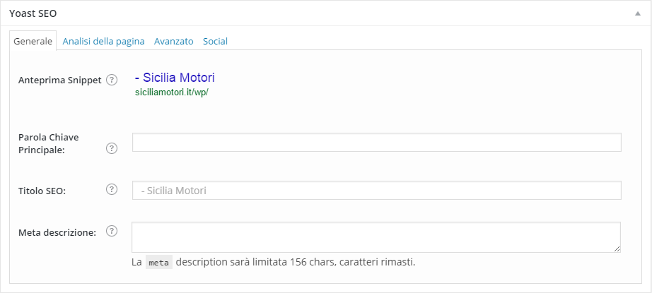
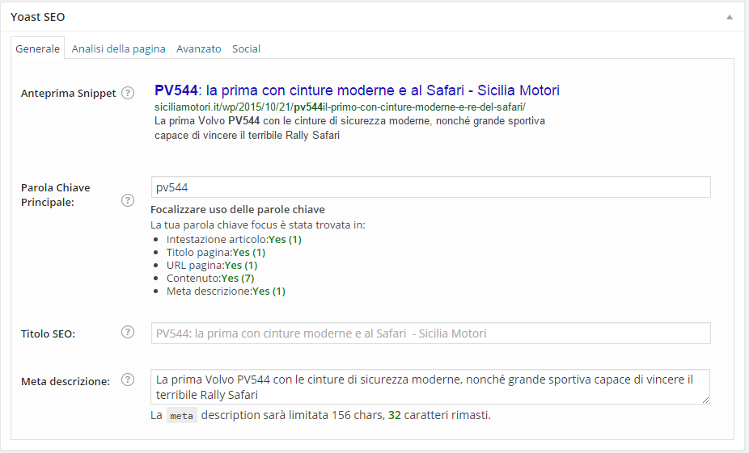
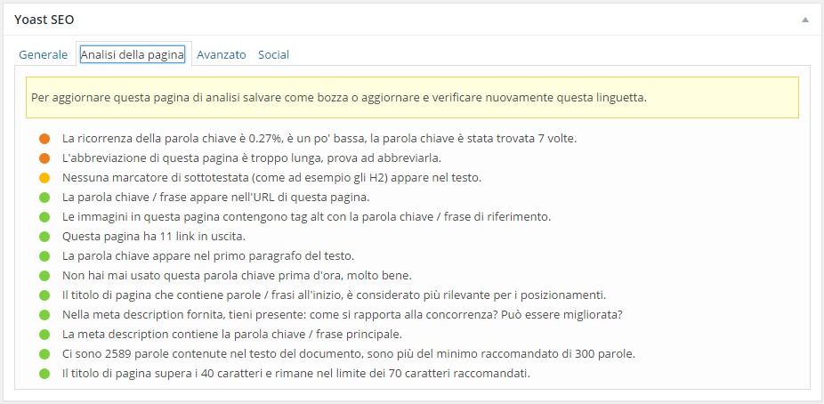

Per "far girare" meglio gli articoli nel vasto web ogni articolo necessita di un pò di SEO, una volta scritto l'articolo troverete scendendo nella pagina la sezione dedicata al SEO

Inizialmente sarà vuota, ma non appena sceglierete una parola chiave questo è quello che potrete vedere.

La sezione dedicata al SEO dovete tenere cura e prestare attenzione a:
- Il titolo dell'articolo, ritengo stupido darvi il numerino, potete vedere l'anteprima su Google dell'articolo nella sezione Anteprina Snippet.
- La meta description in questo caso vi consiglio due cose:
- Scrivete la meta description non superando i 152 caratteri;
- Copiate e incollate la meta description sul Titoletto dell'articolo prima del tag Continua a leggere, in modo da mantenere ordinato il sito
- Scegliete con cura la parola chiave in modo da avere sul verde (buono) il livello di seo
Una volta completato questi piccoli accorgimenti potrete anche dedicarvi alla sezione piu avanzata (se lo ritenete necessario) del SEO, cioè quella che si trova nella sezione
"Analisi della pagina"

Come potete vedere dall'immagine ci sono tutti i consigli utili per rendere l'articolo migliore dal punto di vista del SEO
{kind=link}
{kind=link}
{kind=link}